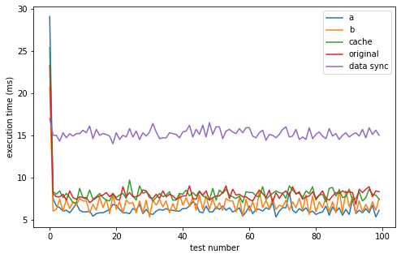
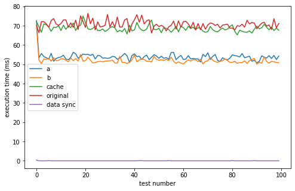

Benchmarking WebAssembly in real-world apps.
A systematic study of how the WebAssembly backend changes performance across four computational domains — machine learning, computer vision, cryptography, and bioinformatics — measured across Chrome, Edge, Firefox, and Safari.
Across representative ML, vision and web-app workloads, moving from a plain-JavaScript path to the WebAssembly backend produced large, consistent speedups.
Rather than synthetic benchmark suites, the paper ports and measures the libraries developers actually ship to the browser.
Machine learning
In-browser inference on the WASM vs. CPU/JS backend, profiling the kernels that dominate runtime.
Computer vision
30 image operations across asm.js, WASM, +SIMD, +multithreading, and both combined — plus live video FPS.
Cryptography
AES-256 and SHA-256 on strings and 1 MB–1 GB files, WASM vs. browser-native crypto.subtle.
Bioinformatics
Protein & DNA multiple-sequence alignment, with a forked toolchain to remove WASM/native output discrepancies.
Running 100 iterations of MobileNet (vision) and MobileBERT (NLP) on an i7-10870H, the WebAssembly backend cut runtime by an order of magnitude. Chrome was consistently fastest and Firefox the slowest, in both backends.


| Task | Browser | WASM (ms) | No WASM (ms) | Speedup |
|---|---|---|---|---|
| Vision (MobileNet) | Chrome | 114.41 | 1,788.58 | 15.54× |
| Vision (MobileNet) | Edge | 119.17 | 1,997.11 | 15.03× |
| Vision (MobileNet) | Firefox | 121.32 | 2,130.98 | 15.48× |
| NLP (MobileBERT) | Chrome | 1,777.59 | 36,337.35 | 20.32× |
| NLP (MobileBERT) | Edge | 1,791.04 | 37,402.71 | 18.73× |
| NLP (MobileBERT) | Firefox | 1,877.68 | 39,916.36 | 18.73× |
Table 6 — average runtime and speedup of the WASM vs. no-WASM backend. Individual vision kernels saw gaps as large as 21.5×.
Profiling the fundamental arithmetic kernels behind CNNs, the study uncovered a quirk: on V8-based browsers (Chrome & Edge), the first tensor passed into a WASM operation is computed measurably faster than the second — independent of input order or memory location. The effect vanished on Firefox's SpiderMonkey engine, pointing to engine-level memory-table allocation strategy rather than JavaScript reference passing.


Relative per-step cost (illustrative). Reading results back out of the WASM heap ("data sync") is the single largest contributor — a reminder that for small tensors, transfer overhead can outweigh compute.
Near-native vision
SIMD never hurt and often helped; MT + SIMD together let almost every OpenCV op hit ~30 fps — Haar Cascades & Median Blur the exceptions.
Chrome leads, Firefox trails
WASM gave 15–20× ML speedups everywhere. Chrome & Edge (V8) beat Firefox (SpiderMonkey), most visibly on short crypto operations.
Memory, not just math
The biggest WASM wins came from fusedConv2d_, depthwiseConv2d_ and add_ — gains driven as much by memory management as by raw arithmetic.
81× faster reloads
Across 26 real WASM web apps, optimized code caching (TurboFan + WASM tiering) cut module response time by 81.15× on average from cold to hot runs.
Selenium + Puppeteer
Headless, incognito browser drivers loaded each benchmark page; timings captured with performance.now() over repeated trials.
Emscripten ports
OpenSSL, OpenCV and Kalign compiled to WASM via Emscripten; minimal HTML harnesses invoked each module directly.
Discrepancy control
A forked Kalign with seedable RNG and disabled AVX2/OpenMP paths ensured WASM and native produced identical output before timing.
Consumer devices
i7-10870H laptop and i5-10600K desktop for ML; multiple PCs and a MacBook Pro for crypto and caching tests.